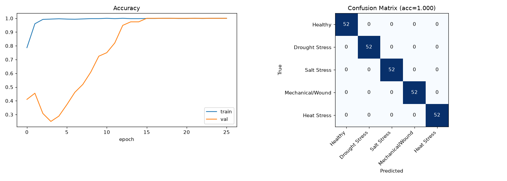
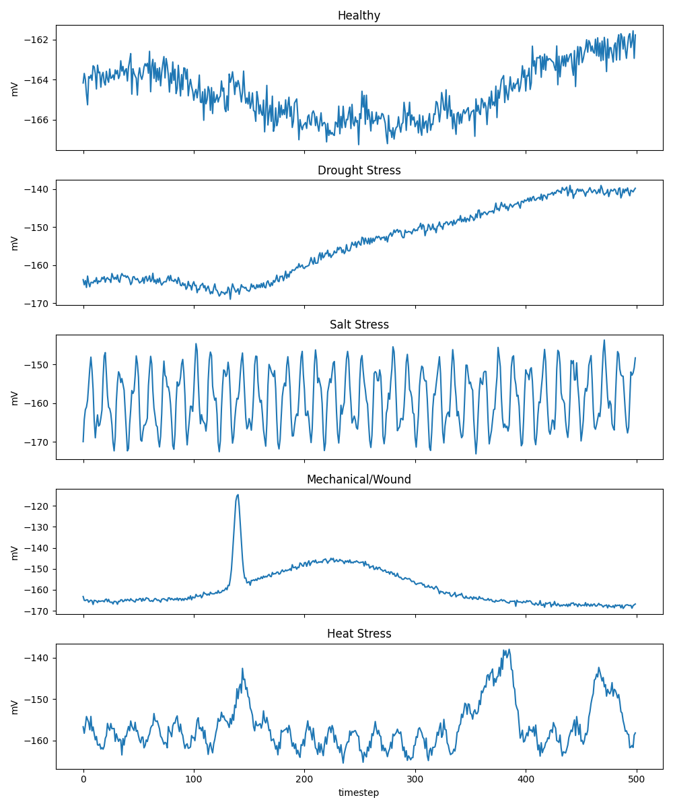

A 1D CNN trained on synthetic bioelectric signals to detect plant stress states from electrode readings.
⚙️ ML Pipeline
AD620 amplifier → ADS1115 ADC → ESP32 logs bioelectric signals at ~5 Hz
Synthetic signals simulating 5 stress states: 260 samples × 5 classes
📄 1_generate_dataset.py ↗3-layer 1D CNN with batch norm, dropout, early stopping over 60 epochs
📄 2_train_cnn.py ↗Classification report + confusion matrix saved. 100% accuracy on test set
📋 View Report ↗📡 Interactive Signal Viewer
Time axis: 500 timesteps (~100 seconds @ 5 Hz). Y-axis: millivolts (mV). Data: synthetic bioelectric signals.
📈 Results & Evaluation
| Class | Precision | Recall | F1-Score | Support |
|---|---|---|---|---|
| Healthy | 1.000 | 1.000 | 1.000 | 52 |
| Drought Stress | 1.000 | 1.000 | 1.000 | 52 |
| Salt Stress | 1.000 | 1.000 | 1.000 | 52 |
| Mech/Wound | 1.000 | 1.000 | 1.000 | 52 |
| Heat Stress | 1.000 | 1.000 | 1.000 | 52 |
| Overall | 1.000 | 1.000 | 1.000 | 260 |

Left: accuracy over epochs. Right: confusion matrix on 260 test samples — all correctly classified.

Each class has a distinct bioelectric fingerprint used by the CNN to classify plant state.
🧠 Model Architecture
📁 Project Files
1,300 samples × 500 timesteps (~12 MB CSV)